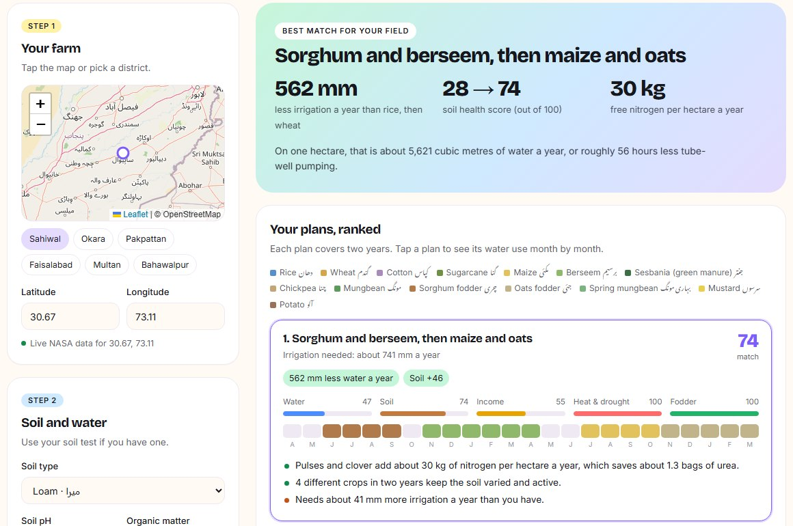
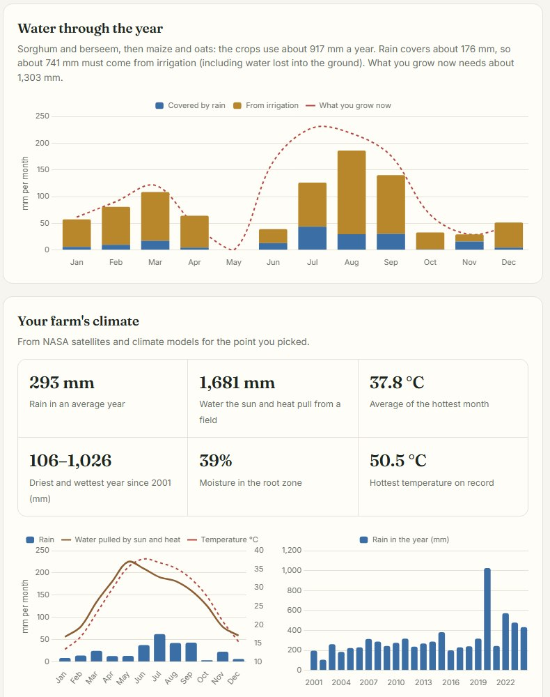

A free tool that helps farmers choose crop rotations that use less water, build healthier soil and hold up in the heat, using NASA climate data.
of rain falls in Sahiwal in an average year.
is what the sun and heat pull out of a green field in the same year.
of irrigation a year for rice and wheat, mostly pumped from falling groundwater.
Most farmers grow the same two cereals every year. The soil loses organic matter, wheat gets hit by March heat, and yearly rain swings from 106 mm to over 1,000 mm. No one gives them a simple way to ask, "What if I rotate differently?"
NASA POWER (Langley Research Center) gives us, for any point on Earth:
What we do with it

The best plan for the field, with water saved and soil-health change, then every plan ranked.

Water use month by month, and the farm's NASA climate.
| Two-year plan | Irrigation a year | Soil health | Why it matters |
|---|---|---|---|
| Rice, then wheat (today) | 1,303 mm | 28 | Puddled rice hardens soil. Wheat is hit by March heat. |
| Sorghum and berseem, then maize and oats | 741 mm | 74 | Year-round green fodder for dairy farms. |
| Sorghum and mustard, then mungbean and wheat | 642 mm | 76 | Breaks the cereal cycle. Mungbean adds nitrogen. |
| Mungbean and wheat, then sorghum and chickpea | 616 mm | 74 | Two pulses save about 1.4 bags of urea per hectare a year. |
560 to 690 mm less irrigation a year: about 5,600 to 6,900 cubic metres of water on every hectare.
Team Indus Orbit: Syed Moaz Altaf, Sana Rasheed